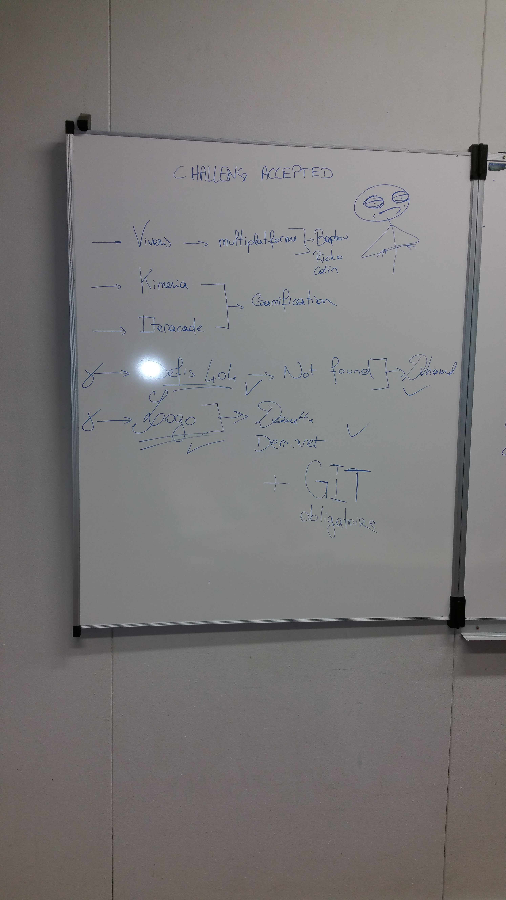
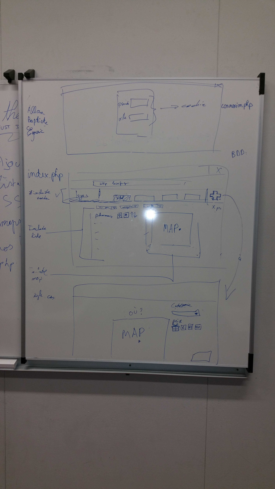

Cette page sert de journal de bord.
Y figurera :
- Le déroulement de la reflexion
- L'analyse
- La gestion du "personnel"
- La réalisation du projet
- Ce qu'on voulait faire
- Ce qui a été fait
- Ce qui n'a pas été fait
Début : brainstorming avec le groupe nous avons d'abord abordé le point des Défis, une fois fait nous avons commencé à réfléchir de la manière la plus optimale
pour gérer les informations utiles aux migrants, comme certains défis étaient orientés design une partie du groupe s'est penchée sur le logo et la page 404.
Photo des challenges :

Notre analyse nous a conduit vers un site orienté "forum" au départ anonyme puis par la suite avec un cookie id/ville pour implémenter des fonctions de gamification (système de point, badges, "podium", ...) la maquette a commencer à se faire.
Photo de la maquette partie 1 :

La gestion du personnel s'est basée sur les point forts de chaques personnes ainsi que la priorité des tâches à accomplir.
Photo du scrumboard (site en cour de prod):

Petit a petit le projet a évolué...

Le but du site est de créer une sorte de "trip advisor". Les migrants se connectent sur leurs smartphones avec un simple pseudo ainsi que la ville où ils se trouvent ainsi les "post" concernant l'endroit où ils se trouvent sont directemment affiché. Qui plus est, grâce à une API maps n'importe qui peut poster un lieu, lui assigner une iconne € qui changera selon le prix (de € à €€€) le placer dans une catégorie (définies elles aussi par des icônes). Un système de vote permettra d'assurer la pérénitée des bons "spot" et les éléments ayant reçus trop de down vote seront effacé.
Ce qui a été fait :
- Un LOGO
- Un dépot git
- Une config serveur
- Une BDD
- Une page 404 personnalisée
- Une page d'acceuil
- Un nom de domaine
- Un système de user login
- API Google Maps
Ce qui n'a pas été fait :